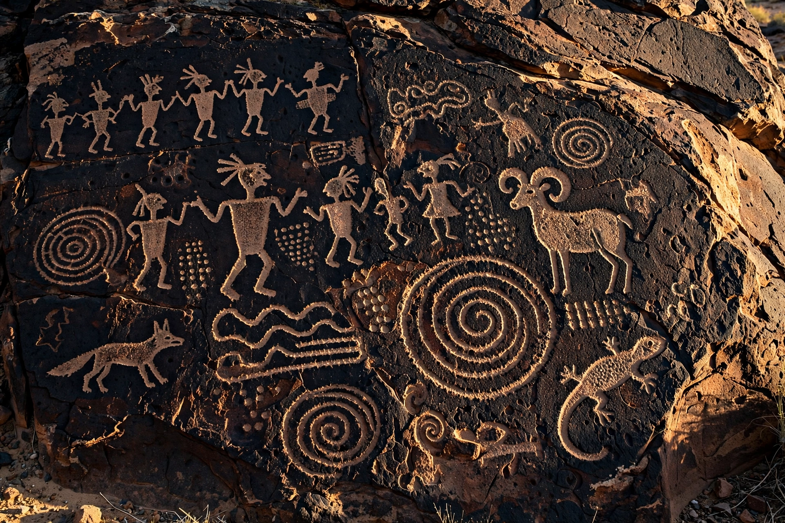

A petroglyph is an image created by removing part of a rock surface by incising, picking, carving, or abrading, as a form of rock art. The term derives from the Greek words petros ("stone") and glyphein ("to carve"). Petroglyphs are found worldwide and are associated with prehistoric and historic peoples.

| Medium | Carved or pecked rock surface |
|---|---|
| Related forms | Pictographs (painted rock art), geoglyphs |
| Famous sites | Petroglyph National Monument; Newspaper Rock; Bhimbetka; Valcamonica |
Petroglyphs were typically made by pecking with a hammerstone, incising with a sharp tool, or abrading the rock surface. On rocks coated with dark desert varnish, pecking away the surface exposes lighter rock beneath, producing high-contrast images.
Notable concentrations occur in the American Southwest (such as Petroglyph National Monument in New Mexico), Scandinavia, Siberia, Australia, the Arabian Peninsula, and the Valcamonica valley in Italy, a UNESCO World Heritage Site. Dating petroglyphs directly is difficult; archaeologists rely on patination, weathering, superimposition, and associated deposits.
Meanings remain debated. Petroglyphs may depict animals, human figures, celestial events, maps, clan symbols, or ritual imagery, and some are interpreted in terms of shamanic practice. Ethnographic analogy with descendant communities informs many interpretations, though researchers caution against projecting present meanings onto the distant past.
Petroglyph sites are threatened by vandalism, development, erosion, and tourism. Many are protected by national and international heritage law, and documentation projects record panels using photography and photogrammetry.
See also: Rock art · Pictograph · Geoglyph